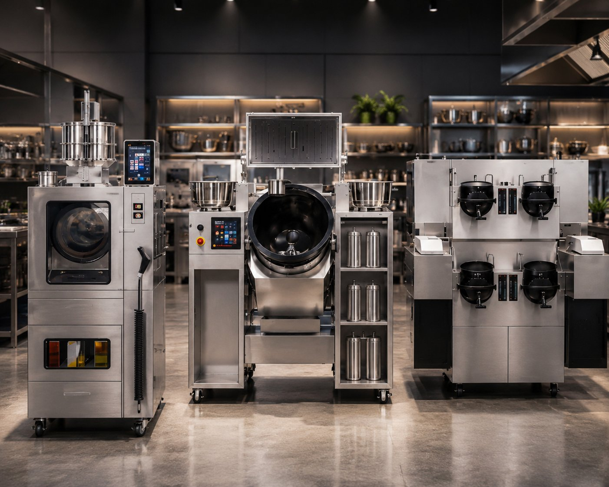
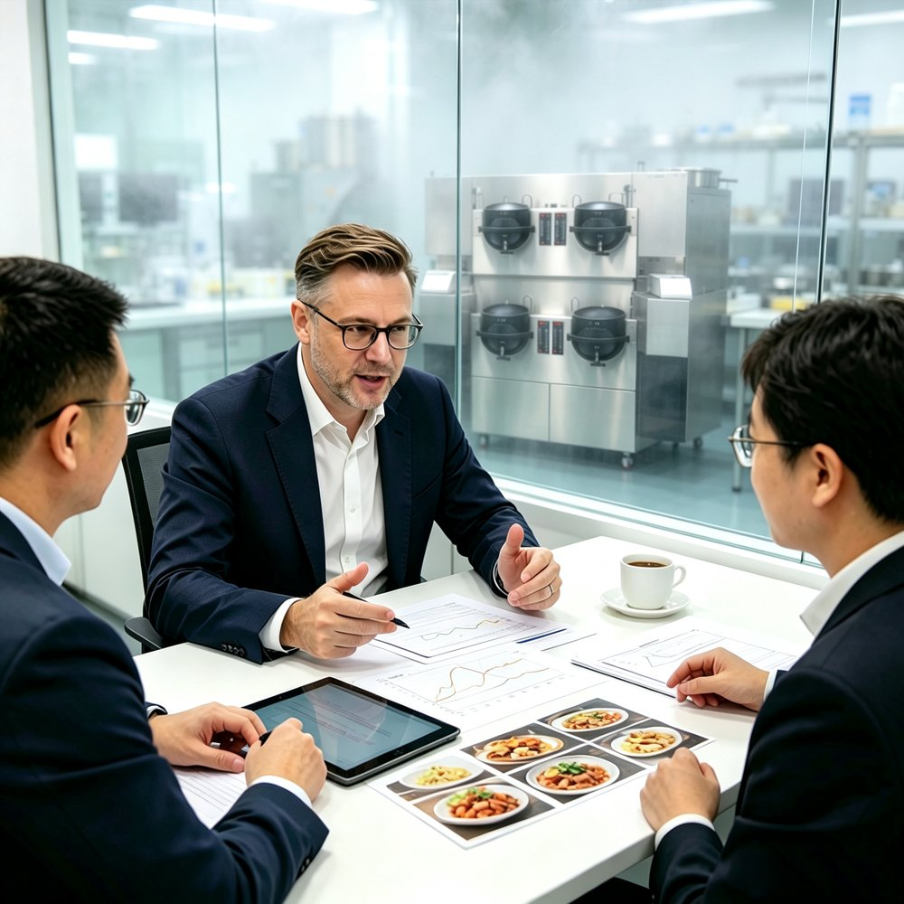
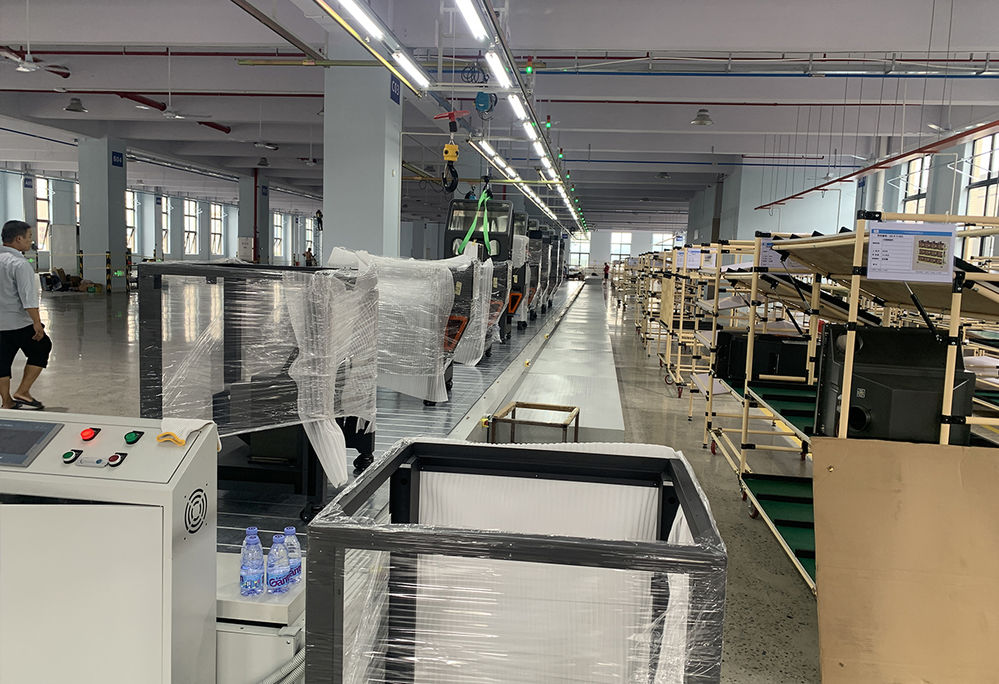
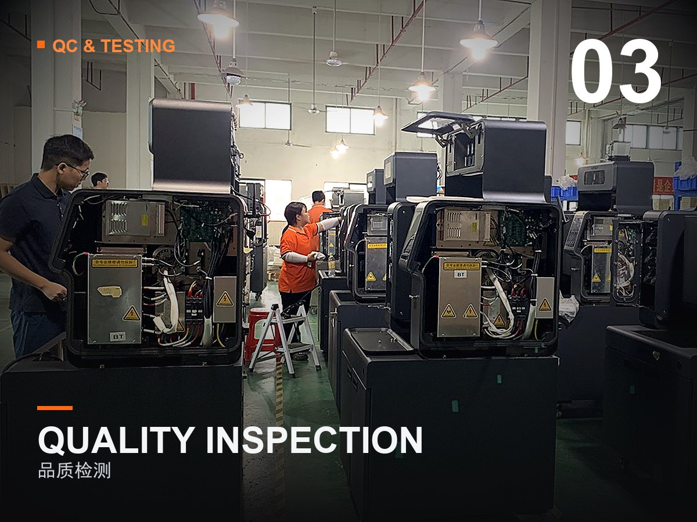
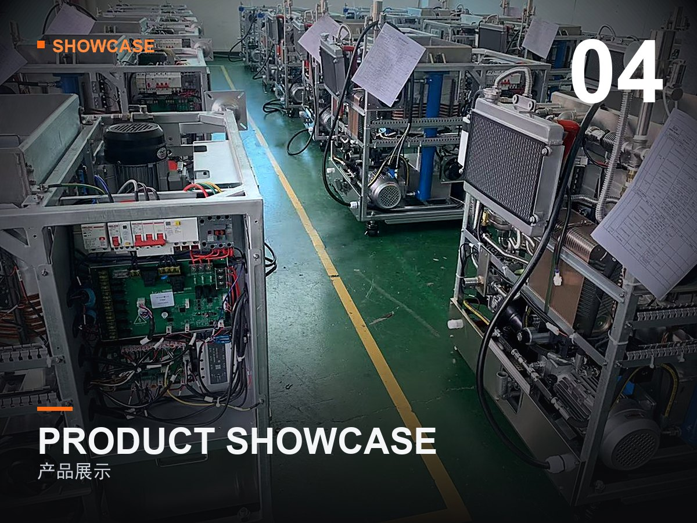
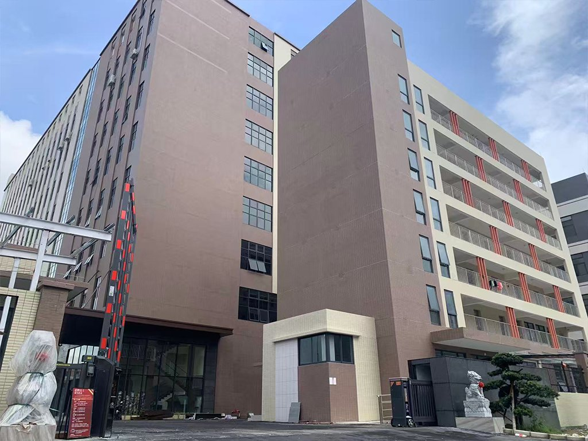

以东吉成熟平台为基础，快速打造贴您品牌的整机产品，缩短上市周期、降低开发风险。


无论您已有设计，还是仅有概念，东吉都能以合适的合作模式帮您落地。
您提供设计与规格，我们负责精密制造与整机组装，严格按图交付。
基于东吉成熟平台，由我们完成外观与结构设计，贴上您的品牌快速上市。
与您的团队深度协同，从概念到量产共同定义产品，形成品牌独占方案。
东吉代工的智能炒菜机，适配多种餐饮业态与运营场景。
标准化出品，减少厨师依赖，稳定口味与效率。
小占地高翻台，适配外卖集中出餐场景。
大批量连续烹饪，满足集中供餐需求。
现炒现做展示，提升用餐体验与档次。
全自动流程，支持无人化与 24h 运营。
整机代工 + 品牌定制，快速扩充产品矩阵。
东吉以标准化流程，让代工项目高效、可控、准时交付。
明确机型、量级、目标市场与认证要求。
OEM 按图 / ODM 改型 / JDM 联合定义。
免费快速打样，功能与结构实测确认。
钣金、焊接、喷涂、组装一体产线就绪。
CE / FCC / UL 等认证与可靠性测试。
柔性排产，准时交付与全球物流支持。
东吉为多家国际品牌与餐饮集团提供整机代工与钣金配套。
为东南亚连锁快餐代工多锅智能炒菜机，支撑其 200+ 门店标准化出餐。

基于东吉单锅平台完成外观定制与认证，快速进入欧洲商超渠道。

与品牌方联合定义模块化方案，形成独家专利与差异化竞争力。
东吉通过体系与产品多重认证，满足全球主流市场准入。
30,000㎡ 智造基地，近 200 人团队，技术人员占比超 25%，钣金到整机一体交付。




东吉智能成立于 2011 年，扎根大湾区，是具备自主研发与设计能力的智能设备制造商。 公司拥有 30,000㎡ 智造基地与全进口激光切割、数控冲压、折弯、焊接、喷涂、组装自动产线， 为餐饮品牌、设备商与渠道商提供 OEM / ODM / JDM 全模式智能炒菜机代工服务。
凭借 14 年智造沉淀与 100+ 技术专利，东吉产品远销澳洲、美国、德国、意大利、东南亚等 50 多个国家与地区， 并为多家国际品牌提供配套制造。我们坚信：把制造交给专业工厂，让品牌专注市场。
